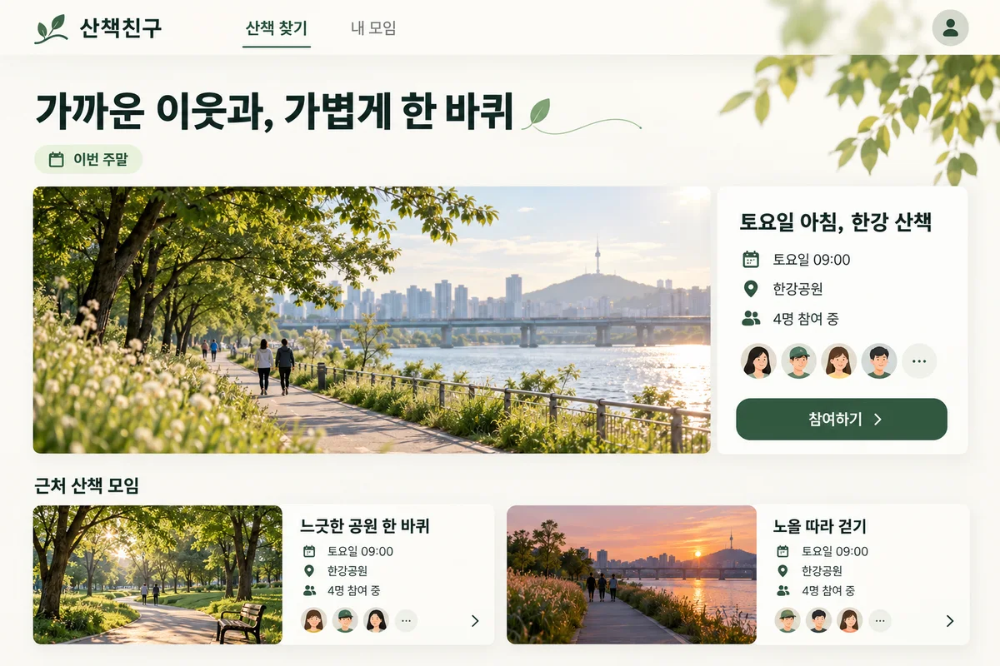
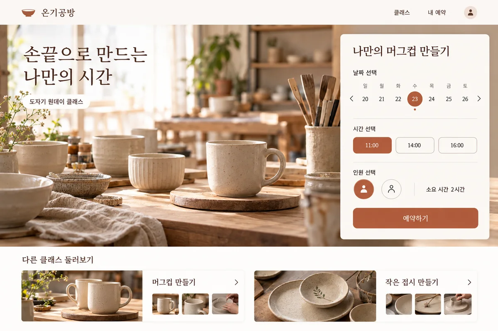
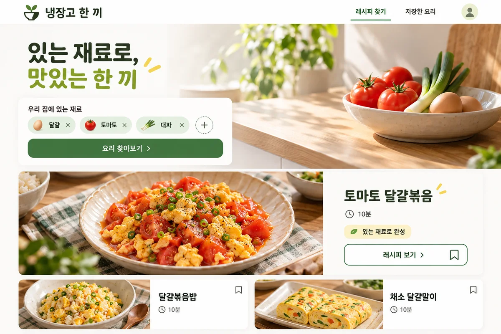

BEFORE
“이웃들과 산책 약속을 쉽게 잡고 싶어요.”
AFTER
동네 산책 모임

- 해결할 문제
- 대화방에 흩어진 약속을 찾기 어려워요.
- 사용할 사람
- 같은 동네에서 함께 걷고 싶은 이웃
- 첫 기능
- 일정 등록참여 신청신청 내역 확인
선택 이유
약속 잡기에 집중하고, 채팅은 나중에.
JSON 백업을 새 프로젝트로 추가합니다. 현재 프로젝트는 유지됩니다.
이메일·비밀번호 없이 시작해요.
답변을 서버로 전송하지 않아요.
내가 복사해 전달할 때만 공유해요.
파일로 보관하고 다른 기기로 옮겨요.
1 / 3
한 줄 아이디어가 기능과 화면으로 정리되는 과정을 살펴보세요.
BEFORE
“이웃들과 산책 약속을 쉽게 잡고 싶어요.”
AFTER

약속 잡기에 집중하고, 채팅은 나중에.
BEFORE
“공방 수업 예약을 메시지로 주고받지 않으면 좋겠어요.”
AFTER

예약부터 간편하게. 온라인 결제는 다음에.
BEFORE
“집에 있는 재료로 뭘 해 먹을 수 있을까요?”
AFTER

있는 재료로 만들 요리에 집중. 장보기는 나중에.
가상의 기획과 화면 디자인이에요. 실제 출시 사례나 빌드브리프의 자동 생성 결과는 아니에요.
필요한 기능과 화면을 고르세요.
모르는 질문은 건너뛰어도 괜찮아요.
답변과 선택 이유를 한 문서로 확인하세요.
모든 질문을 채울 필요는 없어요.
초안과 요청문을 복사해 AI에 전달하세요.
새로 정한 내용은 다시 반영하면 돼요.
가상 아이디어 ‘동네 산책 모임’의 사용 예시예요. 내 답변에는 추가되지 않아요.
프로젝트와 목차는 PC의 왼쪽 메뉴, 모바일 상단의 ‘프로젝트·목차’에서 찾을 수 있어요.
처음에는 ‘새로운 아이디어’ 프로젝트가 준비되어 있어요. ‘바로 시작하기’를 누르고 이름부터 적으면 돼요.
다른 아이디어도 정리하려면 ‘+ 새 프로젝트’에서 이름을 적고 ‘프로젝트 만들기’를 누르세요. ‘내 프로젝트’ 목록에서 전환하면 각자의 답변을 따로 보관해요.
‘관리’에서 프로젝트 이름을 바꾸거나 전체 프로젝트를 백업할 수 있어요.
아이디어마다 답변과 메모를 따로 보관해요.
해결할 문제와 사용할 사람을 적고, 필요한 기능과 화면을 정리해요. ‘다음 단계’로 이어 가거나 목차에서 필요한 주제를 바로 선택하세요.
모든 질문에 답할 필요는 없어요. 모르는 내용은 건너뛰고, 판단한 근거가 있다면 질문 아래 ‘답변·선택 이유 남기기’를 펼쳐 적어 두세요.
입력한 뒤에는 저장 상태가 ‘이 브라우저에 저장됨’인지 확인해 주세요.
목차 맨 아래의 ‘기획 초안 보기’를 누르세요. 모바일에서는 작성 화면 하단에도 같은 버튼이 있어요.
작성한 답변과 선택 이유가 질문별로 묶인 문서가 돼요. 아직 정하지 않은 내용도 확인하고, 수정할 부분은 ‘작성으로 돌아가기’를 눌러 보완하세요.
‘기획 초안 내려받기’는 읽거나 공유할 문서를 저장하는 기능이에요.
동네 사람들이 산책 일정을 올리고 함께 참여할 수 있는 서비스예요.
대화방에 흩어진 약속을 한곳에서 보고 싶어요.
기획 초안 화면 위쪽에서 ‘AI에 전달할 프롬프트 보기’를 누르세요.
창에서 기본·고급을 고르고 내용을 확인한 뒤 ‘프롬프트 복사’를 누르세요. 기본은 기획 정리와 빠진 질문을, 고급은 설계·보안·검증 계획까지 함께 요청해요. 토글 옆 ?에서 차이를 볼 수 있어요.
브라우저에서 복사를 허용하지 않으면 요청문 파일이 대신 내려받아져요. 파일의 내용을 AI에 전달하면 돼요.
기획을 검토하고 보완해 달라는 요청
내 답변 · 선택 이유 · 미정 사항
내용을 확인하고 ‘프롬프트 복사’를 눌러요.
사용하는 AI 서비스의 대화창을 열고, 복사한 내용을 붙여 넣어 보내세요. AI가 부족한 정보나 선택지를 물으면 내 상황에 맞게 답하며 기획을 구체화해요.
새로 결정한 내용은 빌드브리프의 해당 답변에 직접 반영하세요. 외부 AI 대화는 자동으로 저장되거나 연결되지 않아요. 수정한 뒤 초안을 다시 확인하고 복사할 수 있어요.
여기서 얻는 것은 함께 검토할 기획 문서예요. 실제 개발은 기획을 검토한 뒤 별도로 진행하세요.
아래 사용자 입력을 바탕으로 서비스 기획 초안을 함께 구체화해 주세요.
…동네 산책 모임 기획 초안…
참여 신청은 즉시 확정되나요, 모임을 만든 사람의 승인이 필요한가요?
저장된 답변은 같은 기기·브라우저·사이트 주소에서 이어 쓸 수 있어요. 사이트 데이터를 삭제하면 사라질 수 있으니, 중요한 내용을 바꾼 뒤에는 ‘백업 내려받기’로 현재 프로젝트를 보관하세요.
다른 기기나 브라우저에서는 ‘백업 불러오기’를 누르고 보관한 백업 파일을 선택하세요. 기존 프로젝트를 덮어쓰지 않고 새 프로젝트로 추가해요.
여러 프로젝트를 한 번에 보관하려면 ‘관리 → 전체 프로젝트 백업’을 사용하세요.
✓ 이 브라우저에 저장됨
이제 내 아이디어로 시작해 보세요.
작성 중에도 상단 로고나 ‘00 시작 안내’에서 이 가이드를 다시 볼 수 있어요.
작성한 답변은 이 브라우저에 저장되며, 빌드브리프가 서버나 외부 AI로 자동 전송하지 않아요. 초안이나 백업을 다른 사람에게 보내거나 외부 AI에 붙여 넣는 것은 직접 선택해요. 브라우저 저장은 암호화된 개인 금고가 아니므로 공용 기기에서는 사용과 보관에 주의해 주세요.
아는 내용만 적어도 괜찮아요. 순서를 건너뛰거나 답변을 바꿀 수 있고, 작성한 내용만으로 초안을 볼 수 있어요. 작성 현황은 답한 질문의 비율이며, 100%가 기획의 완성도를 뜻하지는 않아요.
지금 사용하는 브라우저에 자동 저장돼요. 같은 기기·브라우저에서 이어 쓸 수 있지만, 사이트 데이터를 삭제하면 사라질 수 있어요. 오래 보관하거나 다른 기기로 옮길 때는 ‘백업 내려받기’와 ‘백업 불러오기’를 사용하세요.
빌드브리프는 내가 작성한 답변을 기획 초안으로 모아 줘요. ‘AI에 전달할 프롬프트 보기’에서 내용을 확인하고 복사한 뒤, 원하는 AI 서비스에 직접 붙여 넣어 대화를 이어갈 수 있어요. 이 사이트에서 AI를 실행하거나 개발을 자동으로 진행하지는 않아요.
아직 이름이 없어도 괜찮아요. 임시 이름으로 시작하세요.